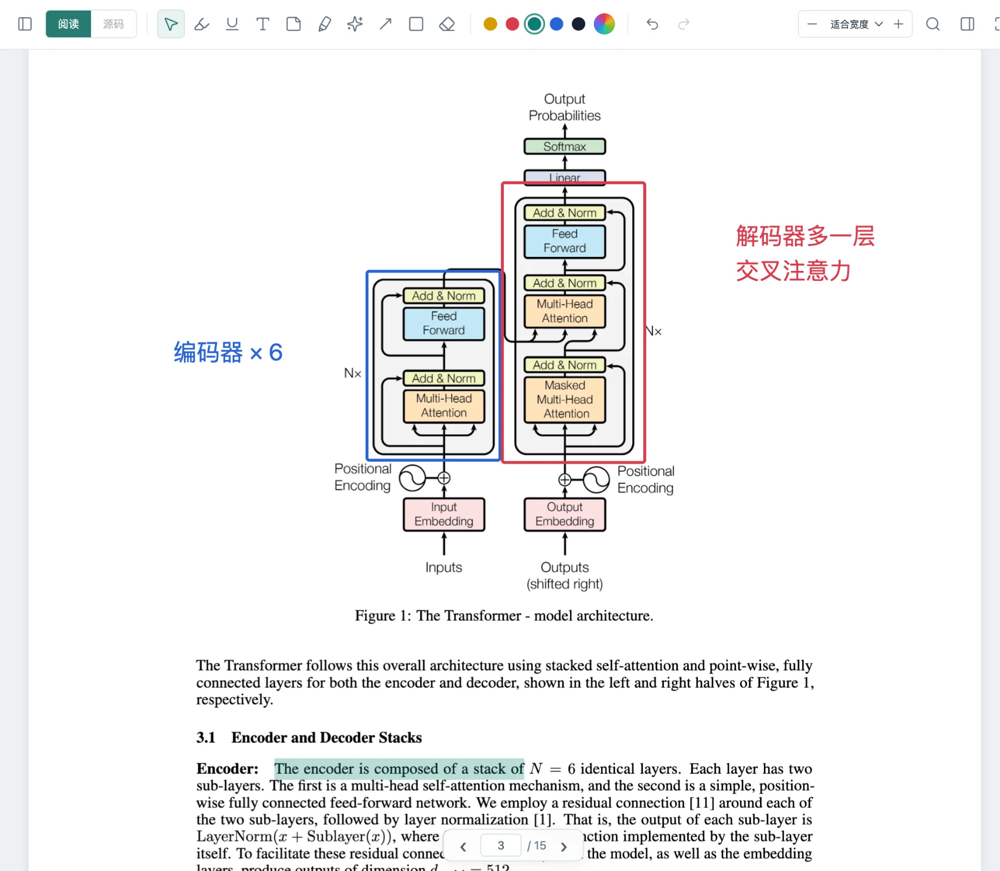

专注阅读
按 ⌘⇧F 进入全屏，只留下正文。鼠标移到顶部，工具随时出现。

页间是一个本地 HTML 阅读器。打开文件夹就能读，随手高亮、批注、手绘，还能直接改源码、实时预览。PDF 也一样顺手。
页间目前提供 Mac 和 Windows 版，可以先收藏本页，在电脑上下载。

一个窗口，一套流程
选一个文件夹，HTML 和 PDF 按目录列好。不用导入，不用上传。
网页按原样排版，图片、样式、公式都在；PDF 连续滚动，书签、链接都能点。
高亮、便签、手绘、箭头，想法贴在它发生的地方，每条都能一键回到原处。
切到源码，左边改 HTML，右边实时预览，改完自动保存。
批注
选中一句就是高亮，点一下写下你的理解。便签贴在页边，箭头连起两段文字，画笔圈出重点。HTML 和 PDF 用同一套工具，所有标记都汇总在右侧批注栏，点一下就回到原处。
五种常用色，也能自由取色。每一步都能 ⌘Z 撤销。

双栏阅读
从左侧把另一篇拖进阅读区，就组成双栏。HTML 与 PDF 任意搭配，比如一边是论文原文、一边是你的笔记；打开同步滚动，两篇一起往下走。

点开 PDF 就读，不用导入。批注按页记录位置，缩放、换布局、重启之后都跟着原页走。

源码
发现错字、想调样式？切到源码，左边编辑，右边实时预览，改完自动写回文件，批注也不会丢。

更多功能
按 ⌘⇧F 进入全屏，只留下正文。鼠标移到顶部，工具随时出现。
⌘ + 滚轮或双指捏合，25% 到 400%，指针下的文字不跑位。
按 Tab 在最近用过的两个工具间切换，比如高亮和便签。
画错一笔，按住 E 擦掉，松开继续画。可以局部擦，也可以整笔擦。
HTML 按标题生成目录，PDF 读取书签。长文一键跳转。
把高亮摘录和笔记导出成 Markdown，放进你自己的笔记系统。
拖入文件或文件夹，也可以 ⌘V 粘贴。导入是复制，原文件保留。
数据
页间不上传你的任何文档，只有你用 AI 助手时，相关的文字才会发给你自己选的服务商。批注、笔记和阅读位置，都保存在文档旁边一个隐藏的
.html-reader 文件夹里。备份、迁移、换电脑，把整个文件夹带走就行。
论文精读/ ├─ Attention Is All You Need.pdf ├─ Attention 伴读笔记.html └─ .html-reader/ ← 批注都在这里 ├─ workspace.json ├─ documents/ │ └─ <文档ID>.json 高亮、便签、笔迹 └─ backups/ 源码的历史版本
免费下载。打开文件夹，就能开始。
macOS
页间目前使用本地签名，还没有经过 Apple 公证，所以 macOS 会拦一下。先尝试打开一次，然后到 系统设置 → 隐私与安全性，找到页间对应的提示，点 仍要打开。只需要做一次。
请只对从本站下载的安装包这样操作。如果系统提示文件已损坏，请重新下载。 Apple 官方说明
Windows
页间还没有购买代码签名证书，所以 Windows SmartScreen 会拦一下。点 更多信息，再点 仍要运行。只在安装时需要一次。
请只对从本站下载的安装包这样操作。如果杀毒软件报毒或文件无法运行，请重新下载。
已装 0.8.0 及更新版本的页间会自动更新。0.7.0 及更早的版本请先退出旧版，Mac 把新版拖进「应用程序」替换，Windows 直接运行新版安装程序。批注存在你的文件夹里，不受影响。
常见问题
目前免费下载、免费使用。
本地的 HTML 和 PDF。HTML 优先支持 UTF-8 编码的静态网页，包括常见脚本、相对路径的图片与样式，以及数学公式；需要登录的网站、复杂的网页应用暂不支持。有文字层的 PDF 可以选字、高亮、写笔记；扫描版可以画线、贴便签，暂时不能选字。
用 MathML 写的公式离线就能显示；如果依赖 MathJax、KaTeX 这类在线脚本，需要联网加载。PDF 里的公式按原样显示。
不会改动。批注保存在文档所在文件夹的隐藏目录 .html-reader 中，原 HTML 与 PDF 保持原样。备份或换电脑时，连同这个隐藏目录一起复制即可。
不会。页间本身不上传任何内容，也不需要账号。只有当你的 HTML 里本来就引用了网上的字体、图片或脚本时，这些资源会像在浏览器里一样从对应网站加载。
使用 AI 助手时，相关的文字会发送给你在「AI 设置」里选的服务商，第一次使用某个服务前会先问你是否同意；API Key 只保存在你的电脑上。用本机运行的模型（Ollama、LM Studio）时，文档不会离开电脑。
支持 Windows 10 和 11（64 位）。Mac 版目前只提供 Apple 芯片（M 系列）版本，需要 macOS 12 或更高，Intel 芯片的 Mac 暂不支持。可以在「关于本机」里查看你的 Mac 用的是哪种芯片。
Mac 提示“无法验证开发者”：先尝试打开一次，再到「系统设置 → 隐私与安全性」点「仍要打开」。Windows 提示“Windows 已保护你的电脑”：点「更多信息」，再点「仍要运行」。原因和注意事项见 Mac 安装说明和Windows 安装说明。
页间会自动更新：新版本在后台下载好后提示重启，选「稍后」则下次退出时自动安装。Mac 版要放在「应用程序」文件夹里才能自动更新。
0.7.0 及更早的版本需要手动更新一次：退出旧版页间，Mac 把新版拖进「应用程序」并选择替换；Windows 直接运行新版安装程序，会覆盖旧版。文档和批注都在你的项目文件夹里，更新应用不会影响它们。